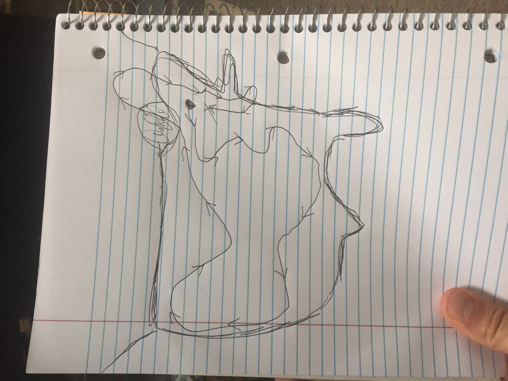
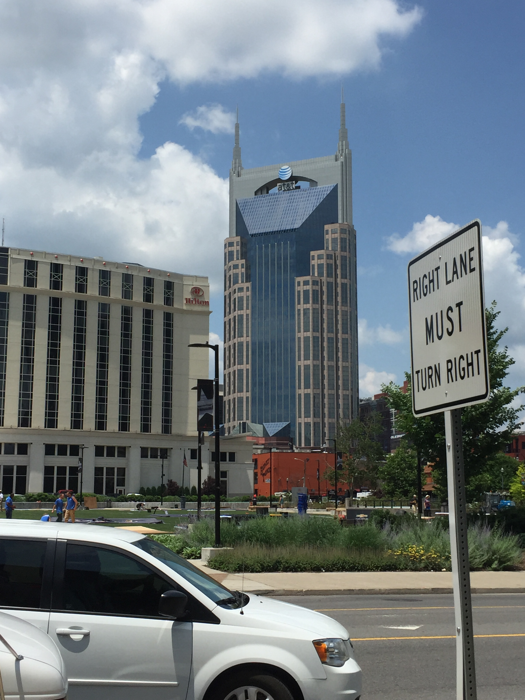
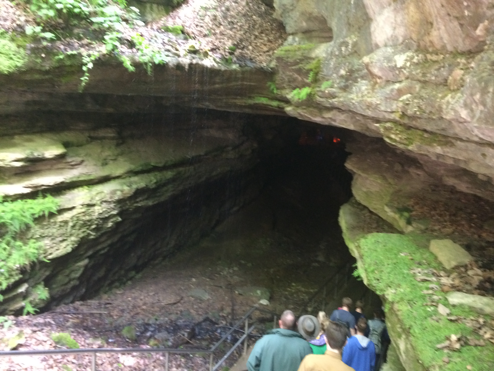
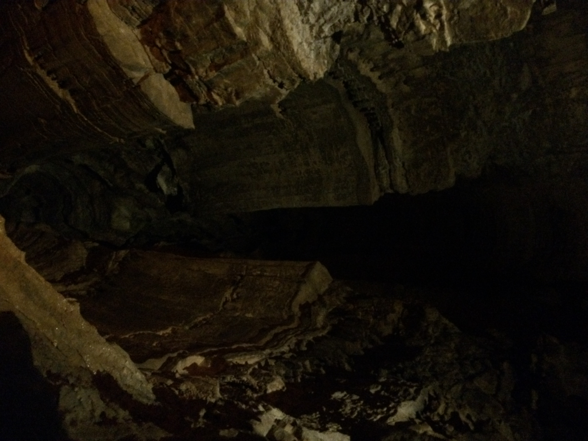
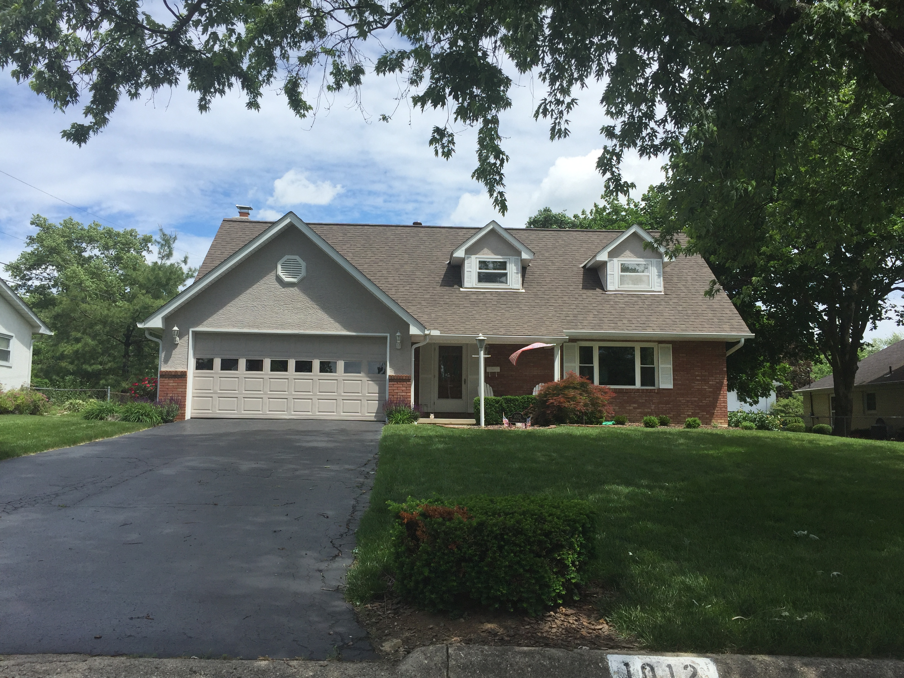
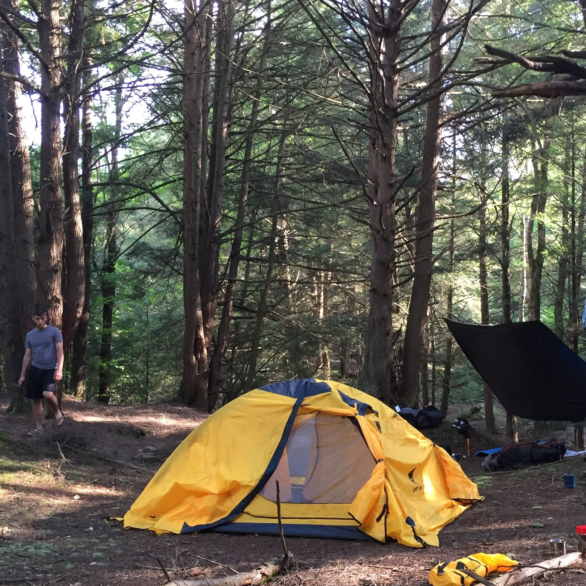
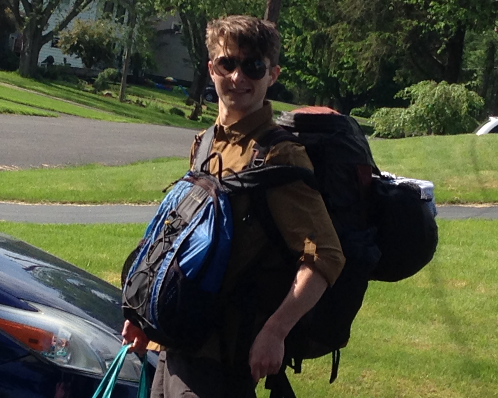

Feed
-

A Summary Thus Far
Friday, May 25: We left from Syracuse to my apartment in Rochester.
Sunday, May 27: Drove from Rochester to the Southern most end of the Allegheny State Forest in Pennsylvania. Stayed at a Free campsite.
-

Birdin' Around
Mike remembered that his pledge brother Konar lived in Nashville as we were struggling to find a cheep place to stay within the city. Not only did Konar have somewhere for us to stay, but it was a gorgeous...
-

Nashville
Music City didn't entail much music for us. We walked down Broadway, and expirienced some typical Nashvillian debauchery, but never really commited to entering the myriad bars with live music. Our stay did begin rather auspiciously with a small brunch at Woolworth's, where we had...
-

Ticks and Spiders and MARTA, oh my!
Hoosier National Forest: The sign said "Be cautious of ticks. Cover the skin and avoid walking through brush. I didn't really listen, and I walked down the trail to the bank of the Ohio river in shorts and my tank top; it was...
-

Darkness
Now this is darkness. At least when I close my eyes I begin to see those vague colorful patterns which give the illusion of some light, but my eyes are open now, and this is it; this is what absolute nothing looks like.
-

Columbus
It was like time travel both for us and for Tom's uncle Tom as he started showing us all of his old maps, books, journals and guides. Uncle Tom was no stranger to long cross-country road trips, so he was happy to hear that we were embarking on one of our own...
-

Arrival in Allegheny
From Rochester, south on 390, and through winding Pennsylvanian country (with only a breif extension to Dansville after missing an exit) we arrived in the Allegheney National Forest...
-

Departure, and Planning
On friday Mike and I left Syracuse and headed to Rochester to move into his appartment. He'll be staying there next year, and being there allowed him to settle some details with the new roomate and the old.